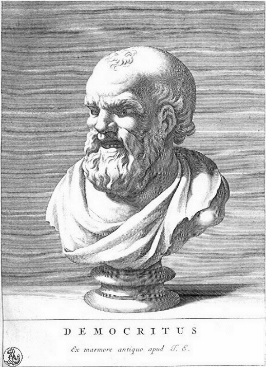

Democrito
Democrito di Abdera · 460 ca.–370 ca. a.C.
«Per convenzione il dolce, per convenzione l'amaro: in verità solo atomi e vuoto»
- Atomi e vuoto
- Convenzione
- Eutimia
- Riso del saggio
💬La massima
«Per convenzione il dolce, per convenzione l'amaro, per convenzione il caldo, per convenzione il freddo, per convenzione il colore; in verità solo atomi e vuoto.»
— Democrito, fr. DK 68 B 9, riportato da Sesto Empirico, Contro i matematici, VII, 135
Prendi un cucchiaino di miele: ti sembra «dolce» come se la dolcezza stesse dentro il miele. Democrito ribalta il tavolo: la dolcezza non sta nel miele, sta nell'incontro tra gli atomi del miele — secondo lui lisci e rotondi — e gli atomi della tua lingua. Lo stesso vale per l'amaro (atomi spigolosi e uncinati, diceva), per il caldo e il freddo, per il rosso e l'azzurro: sono effetti «per convenzione», cioè relativi a noi che percepiamo, mentre «in verità» esistono solo corpuscoli in movimento e lo spazio vuoto in cui si muovono.
È una bomba filosofica con due esplosioni. Primo: fonda la distinzione tra come le cose appaiono e come sono, la madre di tutta la scienza moderna — il colore non è negli oggetti, è luce e occhio. Secondo: salva insieme i sensi e la ragione. Democrito non disprezza gli occhi e la lingua: senza di loro la ragione non saprebbe nulla. In un altro frammento (DK 68 B 125) immagina i sensi che apostrofano la mente: «O misera ragione, tu che da noi hai tratto le tue prove, tenti di abbatterci?». Il messaggio per noi è duplice e pratico: non confondere le tue impressioni con i fatti, ma non buttare via le impressioni — sono l'unico punto di partenza che hai.
👤Biografia
Democrito nasce ad Abdera, sulla costa della Tracia, intorno al 460 a.C., da famiglia ricchissima — tanto che alla morte del padre, racconta Diogene Laerzio (Vite dei filosofi, IX, 34-49), sceglie come parte di eredità la quota in denaro per finanziarsi i viaggi invece delle terre. E viaggia davvero: Egitto, dove studia geometria con i sacerdoti; la Persia caldea, dove apprende astronomia; forse l'India e l'Etiopia. Torna ad Abdera carico di sapere e scrive un'enormità — il catalogo di Trasillo elenca una settantina di opere — ma vive con semplicità, tutto dedito allo studio.
Gli antichi lo chiamavano «il filosofo che ride»: rideva della follia degli uomini che si affannano per ricchezze, onori e paure mentre basterebbe la saggezza per vivere sereni. Visse vecchissimo, oltre i novant'anni — alcuni dicono centonove — e la leggenda vuole che sul finire, cieco, si facesse leggere i libri ad alta voce senza mai smettere di ragionare. Di carattere doveva essere curioso di tutto, ironico e mite: l'opposto del profeta sdegnato, il ritratto del saggio che ha capito il mondo e per questo sorride.
📌Sintesi del pensiero
Democrito dà la prima spiegazione completamente materialistica dell'universo: tutto ciò che esiste è fatto di atomi — corpuscoli indivisibili, eterni e diversi per forma, ordine e posizione — che si muovono nel vuoto, si urtano e si aggregano dando origine alle cose, e si separano quando le cose si dissolvono. Le qualità sensibili sono effetti dell'incontro tra atomi e organi di senso, mentre la saggezza consiste nel conoscere questa natura e nel coltivare l'animo sereno (l'eutimia), che dipende da noi e non dalla fortuna.
🏛️I temi fondamentali
- Gli atomi e il vuoto: il tutto spiegato con il poco. Contro chi riempiva il mondo di dèi, spiriti e cause misteriose, Democrito usa solo due ingredienti: particelle indivisibili (a-tomos, «non tagliabile») e spazio vuoto in cui muoversi. Ogni nascita è un'aggregazione, ogni morte una separazione, nulla si crea dal nulla e nulla si distrugge. Esempio concreto: una zolletta di zucchero che si scioglie nel caffè sembra «sparire», ma un bambino con la bilancia scopre che il peso resta — la materia non si annienta, si disperde. Duemilaquattrocento anni prima della chimica, Democrito aveva già scritto la regola del gioco.
- La convenzione contro la verità: le qualità stanno negli occhi di chi guarda. Il dolce, l'amaro, il rosso, il caldo non sono proprietà degli atomi — gli atomi hanno solo forma, grandezza, ordine e posizione — ma nascono dall'incontro con i nostri sensi. Esempio concreto: lo stesso ufficio sembra gelido a chi sta fermo alla scrivania e afoso a chi torna di corsa dalla pausa pranzo; litigare su «quanti gradi ci sono davvero» confonde la sensazione (relativa) con la temperatura (misurabile). Democrito ci invita a distinguere sempre i fatti dalle impressioni, a casa come al lavoro.
- La ragione alleata dei sensi: diffida, ma ascolta. Democrito è il primo a vedere il circolo della conoscenza: la mente scopre gli atomi ragionando, ma ragiona su ciò che i sensi le forniscono. Perciò i sensi vanno criticati ma mai disprezzati — chi li nega taglia il ramo su cui è seduto. Esempio concreto: il medico che davanti a un referto «strano» non lo butta via né lo prende per oro colato, ma lo confronta con i sintomi e ordina un secondo esame, pratica esattamente questa alleanza tra dato e ragionamento.
- L'eutimia: la serenità come opera d'arte interiore. La fisica di Democrito serve all'etica: se capisci che ricchezze e onori sono aggregati fragili di atomi, smetti di affannarti e coltivi la eutimia, il «buon equilibrio dell'animo» — gioia sobria, misura nei desideri, mente sgombra dall'invidia. Esempio concreto: due colleghi con lo stesso stipendio, uno sempre scontento perché confronta l'auto del vicino, l'altro sereno perché ha deciso cosa gli basta davvero; la differenza, direbbe Democrito ridendo, non sta nel garage ma nell'anima.
📚Le opere principali
- Il grande sistema del mondo (Megas diacosmos; V secolo a.C., perduta, nota dal catalogo di Trasillo e dalle citazioni). La cosmologia completa: formazione dei mondi infiniti da vortici di atomi, nascita della terra, degli esseri viventi e dell'uomo. Tesi centrale: infiniti mondi nascono e muoiono per aggregazione e disgregazione di atomi, senza alcun disegno divino. Conta perché è il primo modello dell'universo senza dèi artefici: toglie il sacro dalla fisica e lo consegna alla ragione.
- Il piccolo sistema del mondo (o Sull'uomo; V secolo a.C., perduta). Applicava l'atomismo all'essere umano: corpo e anima fatti entrambi di atomi, quelli dell'anima solo più fini, mobili e rotondi. Tesi centrale: anche il pensiero è un processo materiale, e la morte è la dispersione degli atomi dell'anima. Conta perché inaugura il naturalismo sull'uomo: niente anima immortale separata, siamo natura che pensa la natura.
- Sulla tranquillità dell'animo (Peri euthymies; V secolo a.C., perduta, ma i frammenti etici più belli — sull'animo come dimora del nostro destino — vengono da qui). Tesi centrale: la felicità non sta nei beni esteriori ma nell'equilibrio interiore, che si ottiene con la misura dei desideri. Conta perché fonda un'etica della serenità ripresa da Epicuro e dagli stoici: il manuale del «filosofo che ride».
- Questioni di geometria e astronomia (trattati vari — Sui numeri, Sulla geometria, Uranografia; perduti, lodati da Archimede e Cicerone). Tesi centrale: la matematica descrive la struttura atomica del reale. Conta perché testimonia il Democrito scienziato: Archimede ammette di aver imparato da lui il volume del cono, e la tradizione lo ricorda come il più versatile sapiente greco dopo Aristotele.
💬Massime celebri
«Gli uomini hanno fabbricato un idolo della fortuna come scusa per la propria incapacità di riflettere.» (fr. DK 68 B 119, in Stobeo, Antologia). Conta perché smaschera l'alibi più usato di sempre: dare la colpa al destino invece di ragionare sulle cause.
«La felicità non abita negli armenti né nell'oro: l'anima è la dimora del nostro destino.» (fr. DK 68 B 171, in Stobeo, Antologia). Conta perché è il manifesto dell'eutimia in una riga: il benessere dipende dall'animo, non dal conto in banca.
«O misera ragione, tu che da noi hai tratto le tue prove, tenti di abbatterci? La tua vittoria sarà la tua rovina.» (fr. DK 68 B 125, in Galeno). Conta perché mette in scena il patto tra sensi e mente: chi disprezza l'esperienza sega il ramo su cui siede la sua stessa ragione.
⌛Contesto storico
Democrito nasce intorno al 460 a.C. ad Abdera, ricca colonia ionica sulla costa tracia: una città di mercanti e armatori, aperta ai venti del mondo, che darà alla Grecia anche Protagora. È la Grecia del secolo d'oro: le guerre persiane sono appena finite — Maratona nel 490, Salamina nel 480 — e Atene, alla guida della lega di Delo, si riempie di tributi e idee. Mentre Democrito è giovane, Pericle governa Atene, si costruisce il Partenone e Sofocle mette in scena le tragedie; i sofisti girano di città in città insegnando retorica a pagamento.
Ma è anche un'epoca di guerre fratricide: nel 431 scoppia la guerra del Peloponneso tra Atene e Sparta, che avvelena la Grecia per quasi trent'anni. Democrito attraversa tutto questo da viaggiatore: studia geometria in Egitto sotto i faraoni dell'ultima indipendenza, astronomia in Mesopotamia sotto l'impero persiano, osserva usi e costumi di popoli diversissimi. Torna in una Grecia divisa e non si schiera con nessuna fazione: la sua patria è il mondo, il suo partito la ragione.
I movimenti che lo formano sono chiari: il maestro Leucippo, fondatore dell'atomismo; gli Eleati — Parmenide e Zenone — che negavano il movimento e il vuoto, e contro i quali l'atomismo è una risposta geniale (l'essere uno e immutabile si frantuma in infiniti esseri minuscoli); i Pitagorici con la matematica della natura; Anassagora con i suoi infiniti semi. I movimenti che lui trasmette sono immensi: Epicuro e Lucrezio ne fanno una religione della serenità; Pirrone e gli scettici ne ereditano la critica dei sensi; e attraverso Gassendi, Galileo e Boyle gli atomi rientrano nella scienza moderna fino a Dalton.
🌊L'eredità
Epicuro è il figlio diretto: prende gli atomi di Democrito, aggiunge una minuscola deviazione spontanea — il clinamen — per salvare la libertà umana dal destino, e costruisce il Giardino, la comunità di amici che vivono di poco e ridono delle paure. Lucrezio ne fa il poema più bello della scienza antica, il De rerum natura, che attraversa i secoli e riappare nel Rinascimento a incendiare le menti. Quando il manoscritto di Lucrezio viene ritrovato nel 1417, l'atomismo rinasce: Gassendi lo battezza in chiave cristiana, Galileo e Boyle lo usano contro Aristotele, e John Dalton nel 1808 ne fa la teoria chimica moderna — ogni formula di chimica imparata a scuola è un nipote di Democrito.
Anche chi lo critica gli deve tutto: Aristotele lo confuta per pagine e pagine, e proprio confutandolo ne tramanda il pensiero; Platone, si dice, avrebbe voluto bruciarne i libri, tanto li temeva. Marx dedica la tesi di laurea del 1841 al confronto tra Democrito ed Epicuro, innamorato di un materialismo che lascia spazio alla libertà. E nel Novecento i fisici del quanto — da Einstein a Heisenberg — citano il filosofo che ride come il nonno remoto che aveva visto giusto: il mondo è davvero fatto di granelli invisibili, anche se più strani di quanto lui immaginasse.
🌍Esempi di oggi
- Il vestito «blu o oro» che divise il web. Quella foto del 2015 sembrava bianca e oro ad alcuni, blu e nera ad altri — e tutti litigavano su «come è davvero». Democrito avrebbe riso: il colore è «per convenzione», sta nell'incontro tra luce, schermo e occhio, non nell'oggetto; la verità (lunghezze d'onda e pixel) è un'altra cosa dalle impressioni.
- La recensione da una stella dopo un ritardo del corriere. Un cliente dà una stella a un ottimo prodotto solo perché il pacco è arrivato tardi: confonde l'emozione del momento con la qualità della cosa. Separare «come mi sento» da «come stanno i fatti» è l'esercizio democriteo quotidiano, utilissimo prima di scrivere recensioni, mail di protesta o post indignati.
- Il collega sereno con lo stesso stipendio. In ufficio, a parità di paga, c'è chi è sempre avvelenato dal confronto con gli altri e chi vive bene perché ha deciso la propria misura. Il secondo pratica l'eutimia senza saperlo: ha capito che la serenità è un'opera interiore, non un saldo in banca.
📄
# Democrito — «Per convenzione il dolce, per convenzione l'amaro: in verità solo atomi e vuoto»
Buongiorno! Oggi incontriamo il filosofo più allegro dell'antichità: un greco di Tracia che viaggiò fino in Egitto e in Persia, rise per tutta la vita della stoltezza umana e, senza microscopi né laboratori, indovinò la struttura nascosta del mondo — tutto è fatto di corpuscoli invisibili che danzano nel vuoto. Il ritratto qui sopra è un'incisione da un busto antico di Democrito: fronte alta, barba folta, sguardo ironico, il volto di chi la sa più lunga degli altri e si diverte a guardali litigare sulle apparenze.
🧠Quiz
1 Secondo il frammento DK 68 B 9, che cosa esiste «in verità» (e che cosa esiste solo «per convenzione»)?
2 Che cosa sono gli atomi per Democrito?
3 Perché Democrito è chiamato «il filosofo che ride»?
4 Che cos'è l'eutimia?
5 Chi tra questi è l'erede più diretto dell'atomismo di Democrito?
Rispondi in chat con es. 1B 2A 3C 4D 5A (usa - per le risposte che salti).
✅Soluzioni — tocca per vedere
1B – In verità solo atomi e vuoto; dolce, amaro, caldo, freddo e colore esistono per convenzione, cioè relativi a noi che percepiamo (fr. DK 68 B 9). 2B – Gli atomi sono corpuscoli indivisibili ed eterni (forma, ordine, posizione), il resto nasce da aggregazioni e separazioni nel vuoto. 3B – Rideva della follia umana: affannarsi per ricchezze e onori mentre la saggezza basterebbe a vivere sereni. 4B – L'eutimia è il buon equilibrio dell'animo, gioia sobria fondata sulla misura. 5A – Epicuro riprende l'atomismo e ne fa un'etica; Lucrezio lo canta nel De rerum natura.
🔁Ripasso
- Convenzione contro verità: se sbagli la 1, ricorda il miele — la dolcezza non sta nel miele ma nell'incontro tra atomi del miele e della lingua.
- Atomi: se sbagli la 2, ricorda zucchero nel caffè — nulla si crea né si distrugge, tutto si aggrega e si separa.
- Il riso del saggio: se sbagli la 3, ricorda che Democrito ride per mitezza ironica, non per scherno crudele.
- Eutimia: se sbagli la 4, pensa ai due colleghi con lo stesso stipendio — la serenità sta nell'animo, non nel garage.
- Eredi: se sbagli la 5, segui il filo Abdera-Giardino-Roma-scienza moderna: Democrito, Epicuro, Lucrezio, Gassendi, Dalton.
🖼️In un colpo d’occhio
Tocca l’immagine per ingrandirla.